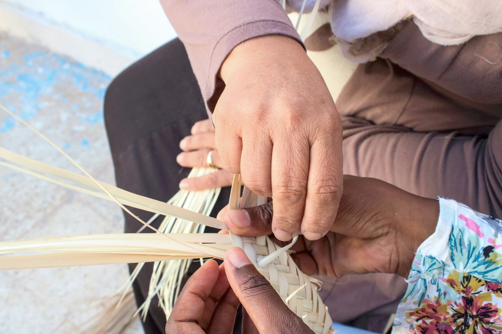
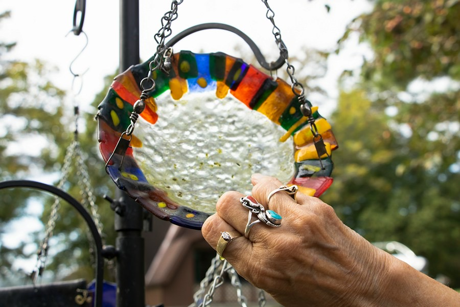
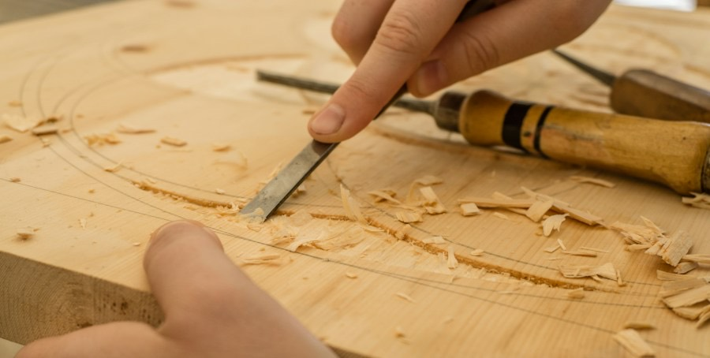
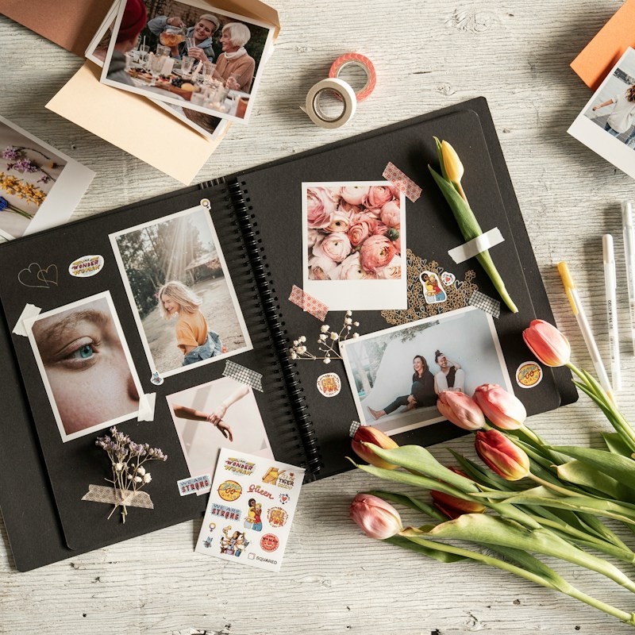
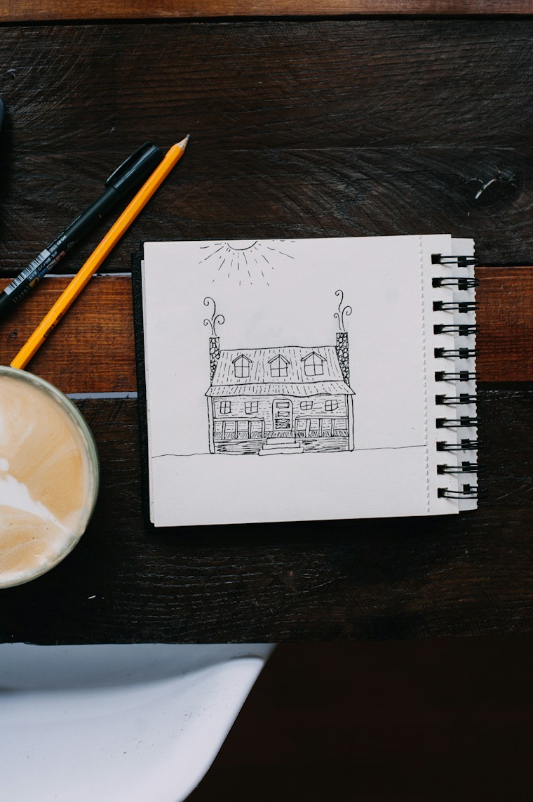
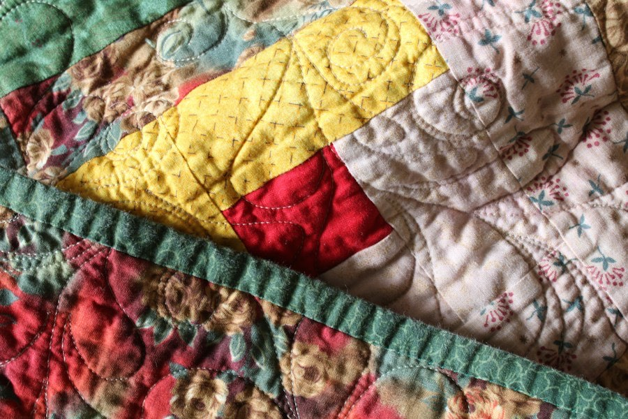
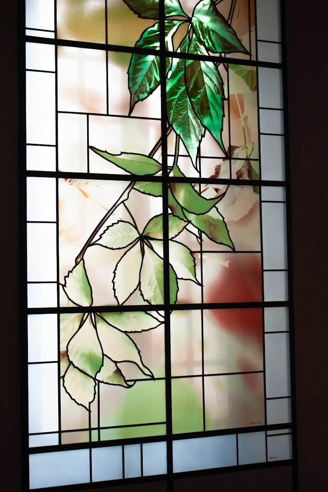
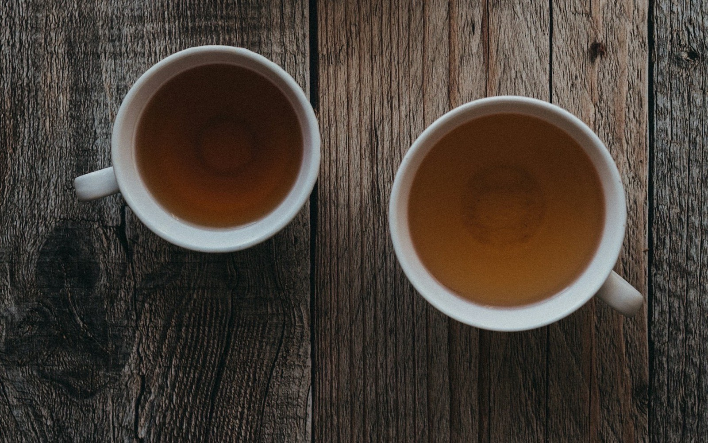

Quelqu'un vous a quitté. Gardez-le entre vos mains.
Je suis Nathalie. Après une perte, je marche à vos côtés, des premières semaines jusqu'à l'objet terminé. Plutôt qu'une urne de plus sur un meuble, on fabrique ensemble une petite pièce qui lui ressemble et qui exauce un peu son dernier souhait : un éclat de verre serti de cuivre, une sculpture, un album, un dessin. On le fait à quatre mains, et on prend le temps de parler de ce qui pèse.
Rien à réparer. Rien à presser.
Ateliers à Bruxelles, chez moi ou chez vous
Qui je suis
J'ai cinquante-quatre ans, et d'aussi loin que je me souvienne, j'ai fabriqué. Des albums de scrapbooking pour chaque été, des dessins dans les marges, de la terre, du bois. Et depuis quelques années, du verre : je le découpe, je le sertis d'un ruban de cuivre, puis je le soude à l'étain jusqu'à ce que les morceaux tiennent ensemble. J'ai passé des soirées entières dans des ateliers de toutes sortes, juste pour apprendre un geste de plus.
Il y a quelques années, j'ai perdu ma mère. Mon père est parti un peu plus tard. Entre les papiers, les meubles à vider et l'urne qu'on vous tend au funérarium, j'ai compris une chose : ce qui m'a aidée, ce n'est pas ce qu'on m'a vendu. C'est ce que j'ai fait de mes mains, pour eux.
C'est de là qu'est né Fil de vie. Aujourd'hui, je veux faire ce chemin avec d'autres : rester à côté de vous après le départ de quelqu'un, et fabriquer avec vous la pièce qui le garde près de vous.
« Ce que j'ai fait pour eux tient dans une main. Je le regarde tous les jours, et ce n'est jamais triste. »
Les 3 piliers
Le deuil ne se résout pas, il se traverse. Fil de vie repose sur trois mouvements, qui ne se suivent pas toujours dans l'ordre : on y revient, on les mêle, on avance à son pas.
Recevoir la peine telle qu'elle est. Lui faire une place, la déposer, sans avoir à aller mieux tout de suite.
Rendre hommage à la personne et à ce qui vous lie. Réaliser un souhait, garder un lien symbolique.
Faire de ce qu'on ressent quelque chose de porteur de sens : un objet, un geste, un rituel.
« Ce qui nous relie ne s'arrête pas avec le départ. Il change de forme. »
L'accompagnement
Je ne viens pas pour une séance avant de repartir. Je reste, le temps qu'il faut, souvent plusieurs mois. On avance à votre pas, et entre deux rendez-vous, je suis toujours là.
Pour commencer
Une heure pour se rencontrer. Vous me racontez ce qui vous amène, à votre rythme, et je vous explique comment je travaille. On regarde ensemble ce dont vous avez besoin maintenant : déposer ce qui pèse, honorer la personne, ou commencer à transformer. À la fin, vous repartez sans engagement ; si vous le souhaitez, on dessine la suite.
Réserver la séance découverteOn se rencontre, chez vous ou à l'atelier. Vous me parlez de lui, d'elle, de ce qui manque à table le soir, de ce qu'il ou elle disait vouloir faire « un jour ». Ce jour-là, il n'y a rien à décider.
On se voit chaque semaine, si vous le voulez. Le coaching, chez moi, c'est simple : trouver des mots pour ce qui n'en a pas encore, retrouver quelques repères, tenir les jours où tout pèse plus lourd que prévu.
On choisit ensemble ce que vous allez fabriquer, en partant de son dernier souhait. Puis on travaille côte à côte : le verre, le cuivre, la terre, le papier. Les mains occupées, la parole vient autrement. On façonne et on parle dans le même geste, sans avoir à se regarder en face.

Vous repartez avec lui, et avec ce qu'on s'est dit en le faisant. Si vous avez envie qu'on se revoie après, la porte reste ouverte.
Vous ne ferez pas ce chemin sans moi.
Entre deux séances, un message suffit. Je réponds le jour même, sauf le dimanche.
Des rendez-vous réguliers, sur plusieurs mois, pour traverser les premiers temps du deuil sans être seul.
Un espace pour dire ce qui pèse, sans avoir à être fort, sans jugement et sans conseil qu'on n'a pas demandé.
Partir de ce qu'il ou elle aimait, de ce qu'il voulait faire « un jour », et le faire exister.
Son dernier souhaitUn objet, un geste, un rendez-vous qui garde la personne présente, autrement.
Trouver les moyens de transformer ce qu'on ressent en quelque chose de porteur de sens, souvent par les mains.
Son dernier souhait
Une urne classique finit souvent posée quelque part, et on ne sait plus quoi en faire. Je vous propose autre chose : partir de ce qu'il ou elle aimait, de ce qu'il ou elle disait vouloir faire un jour, et en faire une petite pièce. Un objet qu'on peut tenir, porter, accrocher à une fenêtre.
« Elle disait toujours qu'elle reverrait la mer. »
Un pendentif de verre bleu, serti de cuivre, avec quelques grains du sable de sa plage.
« Son jardin, c'était toute sa vie. »
Une feuille de vitrail pour la fenêtre de la cuisine, verte comme ses tomates pas encore mûres.
« Il voulait finir l'album des vacances. Il n'a jamais eu le temps. »
On le finit ensemble, page après page, avec ses photos, ses billets et son écriture.
« Un jour, j'irai boire un pisco au Pérou. »
Alors on y va.
Quand le souhait est un voyage, on peut aussi l'exaucer. S'il rêvait de boire un pisco quelque part en Amérique latine, je vous aide à préparer ce voyage, et si vous le souhaitez, je pars avec vous. Là-bas, on lève un verre pour lui. On rapporte un caillou, une étiquette, un bout de tissu, une photo. Au retour, on en fait la pièce.
L'objet reste petit. Ce qu'il porte ne l'est pas.
Une précision honnête : en Belgique, ce que l'on peut faire des cendres est encadré par la loi, et les règles varient d'une région à l'autre. Les pièces que l'on fabrique n'en contiennent pas ; elles gardent autre chose : sa couleur, ses objets, son écriture, ce qu'il voulait vivre.
Les ateliers
Un éclat de verre, une sculpture, un album, un dessin, ou quelque chose qui n'a pas encore de nom. Vous choisissez la matière, je vous montre les gestes, et on avance ensemble jusqu'à ce que la pièce tienne debout. Personne ne vous demande de savoir faire.
Un cercle de parole, à petit nombre, pour dire ce qu'on traverse et entendre que d'autres le traversent aussi.
Les mains au travail : le verre, la terre, le papier. On fabrique, et la parole vient autrement.
En collectif ou en individuel. Prochaines dates : à venir.

On choisit les couleurs, on découpe, on entoure chaque morceau d'un ruban de cuivre, puis on soude. Un vitrail à suspendre, un pendentif à porter : la lumière passe à travers, comme il faut.

Un morceau de tilleul ou une motte de terre, et le souvenir de ses mains qui travaillaient le dimanche. Un copeau, puis un autre. La forme vient lentement, comme le reste.

Ses photos, ses billets, ses recettes, son écriture. On découpe, on colle, on raconte. Un album qui n'existe qu'en un seul exemplaire, et qu'on a fini pour lui.

Sa maison, son visage, son paysage. On apprend à regarder avant de tracer, au crayon, à l'encre ou à l'aquarelle. On le fait pour soi, pas pour un musée.

Sa chemise du dimanche, son pull trop grand. On découpe, on assemble, et ça devient un plaid ou un coussin où l'on peut encore se blottir.
Une boîte pour ses lettres, un mobile pour la chambre d'un enfant, une urne façonnée pour le columbarium. Vous me racontez, on dessine ensemble, et je cherche les gestes qu'il faut.
Ce qui reste

À la fin de l'atelier, vous repartez avec ce que vous avez fait. Pas un objet parfait : le vôtre, avec la marque de vos doigts, la soudure un peu épaisse, le morceau de verre qu'on a recoupé deux fois.
Il garde deux mémoires à la fois. Celle de la personne, qu'on retrouve un peu dans sa forme, sa couleur, ce qu'elle aimait. Et celle des heures passées à le faire, à parler d'elle, à se taire aussi.
On ne le range pas. On le pose là où l'on passe.
Lui écrire, quand ce sera le momentLes rituels
Un rituel, c'est un moment qu'on choisit de vivre pleinement. Une bougie, une lettre, un objet posé quelque part. On les crée ensemble, à votre image.
Dire ce qui n'a pas été dit, et laisser partir doucement.
Remercier pour ce qui a été vécu, pour ce qui reste.
Poser ce que l'on souhaite pour la suite, pour soi et pour le lien.
Les rituels peuvent s'inscrire dans une séance d'accompagnement ou clore un atelier. Ils se vivent seul, en famille ou à plusieurs.
La boutique
Entre deux accompagnements, je fabrique pour le plaisir : des bijoux, des pièces de verre serties de cuivre. Chaque pièce est faite à la main, à l'atelier.

L'atelier, un mardi matin. Deux tasses, et tout le temps qu'il faut.
Pour réserver la séance découverte, laissez-moi votre prénom et un moyen de vous joindre : je vous propose un moment qui vous convient. [outil de réservation à choisir]
Et si vous voulez seulement parler, vous n'avez pas à savoir quoi dire. Son prénom, ce qui vous occupe, ou seulement « je ne sais pas par où commencer » : c'est assez pour que je vous réponde.
C'est moi qui lis, et c'est moi qui écris en retour. Ensuite on se parle, au téléphone ou autour d'une table, et rien ne vous engage.
Je réponds moi-même, dans les trois jours.
Vous préférez écrire depuis votre messagerie ? nathalie@fildevie.fr. Si écrire est trop, laissez seulement un prénom et un numéro : je vous rappelle.